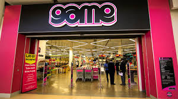
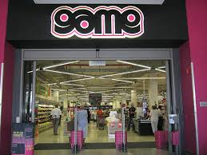
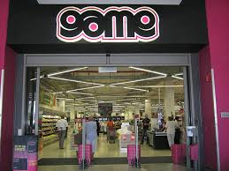

GAME
Game is a promotionally driven discount retailer of predominantly general merchandise and non-perishable groceries for home, leisure and business use. Game is a subsidiary of the JSE listed, Massmart Holdings. Massmart is Africa’s third largest distributor of consumer goods, the leading retailer of general merchandise, liquor and home improvement equipment and supplies, and the leading wholesaler of basic foods. To visit Massmart Holdings Group website click here – www.massmart.co.za A bit about our past The first GAME store opened in Durban, South Africa, in 1970. It was born out of the belief by its founders that shopping had become a tedious and boring pastime. They wanted to create a fun shopping environment and so conceptualized retailing as a game. The signature shocking pink has still prevailed to this day. We operate out of 150 stores in 12 African countries.
 
